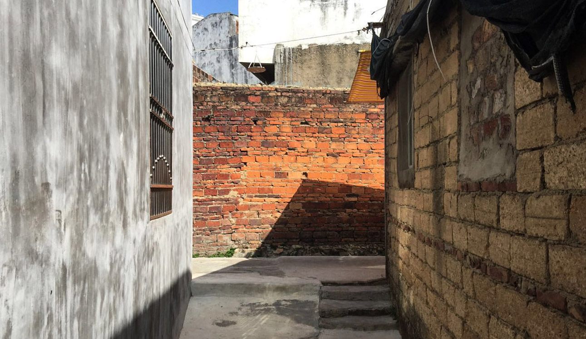
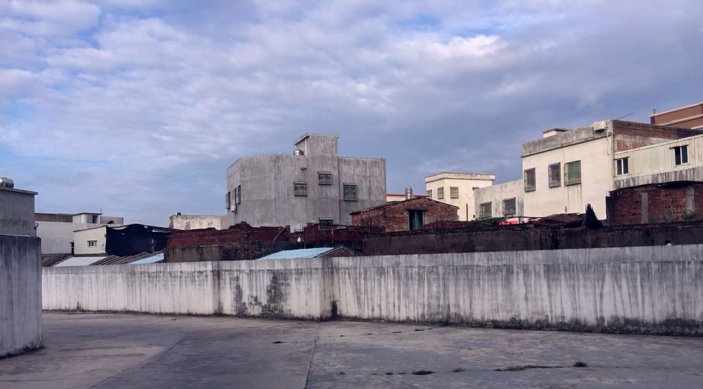

2017/11/23 - 2018/05/06。
周围的人都比自己走得远。折叠桌比以前的短了五分之一，板子都放不下。吃饭的是时候M说:"你蹲了3年了"。被戳中痛处后碎嘴反驳了几句，就泄了气。
「愤怒是懦弱者的借口。」
逃避，不知从哪个时候起，逃跑是第一选项。可以不用和人比，也就不会被嘲笑。刻在灵魂上的一个印记。小时候脑子反应不过来，不会察言观色，到最后被骂的狗血淋头时，却又感觉被背叛。多个几次，就开始控制不要轻易表露感情。当然，结果是没什么长进。
音乐的力量是巨大的。网易云的新曲推荐不错，隔些时间都会有一两首对味的歌曲，比如「きのこ帝国 - スクールフィクション」1。而在某个时刻听到非常契合的歌，就像在湖底窒息之时，把你拖出水面，像李宗盛的「山丘」2，在那几个寒冷的日子带来一点温度，却只敢听前两句。Emily King的「Distance」3，三天前听到，也是不错。
有时发现自己好像丧失了味觉，尝不出味道。不过生活中还是会有些许的惊喜。前几天被F叫起来买咸鸭蛋，8点左右。回家到现在还没这么早出门过。
还是前些天，理发回来
